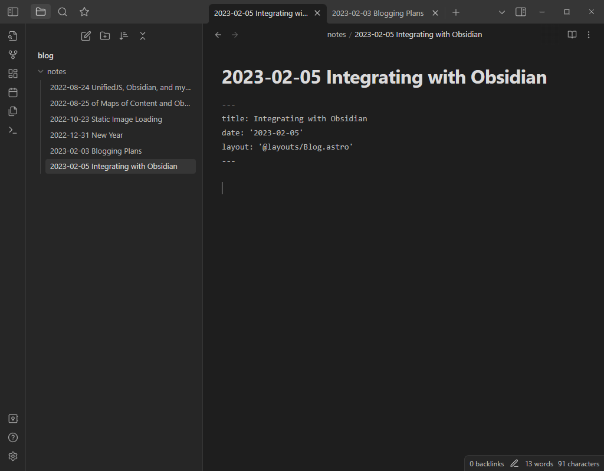
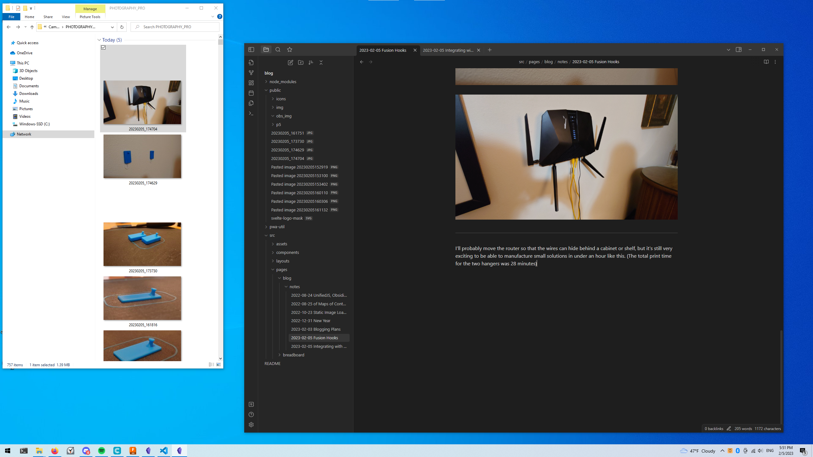
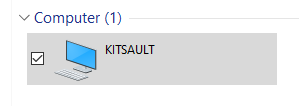
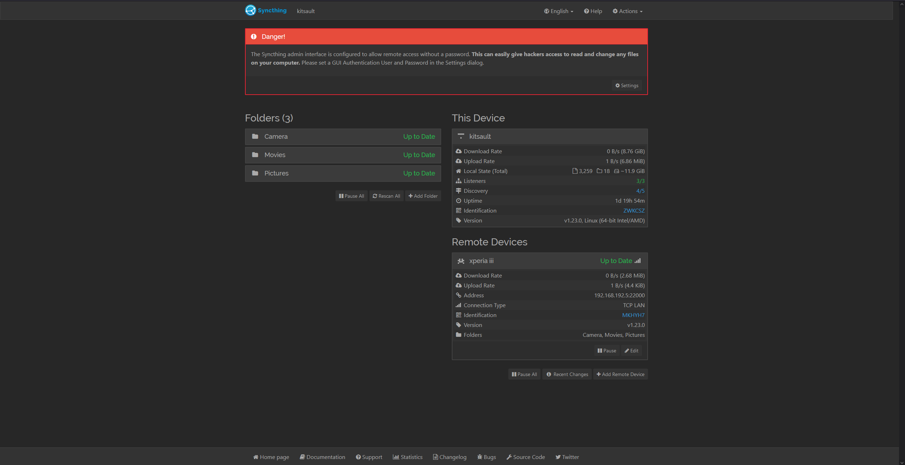
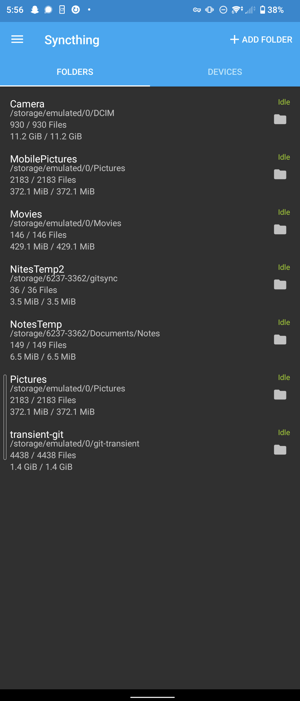

Integrating with Obsidian
Making Obsidian links and drag-and-drop images work with the markdown parser in Astro.

I need to change links in Obsidian so that they'll work with the markdown parser in Astro though.
I thought I could easily just point Obsidian at the directory whewre my markdown is stored and be done - but thing are never that easy...
Here's some schemes for images I've tried -


my criteria is that as I write, I want to be able to drag and drop images and be done. I don't want to have to edit paths, or jump to VS Code, or anything. Everything should work as a consequence of editting files with Obsidian only.
However, it seems like we may need to get our hands dirty.
The issue is that for using the  syntax, I need to either have the images in the public/ directory, or each of my markdown files needs to actually be a MDX file so that I can import the image as if it were a module.
Neither of these will do...
https://docs.astro.build/en/guides/images/#in-markdown-files
We can use remark plugins to manipulate markdown as it's rendered through Astro - which means we can also (eventually) create our own.
I already have a few defined
markdown: {
extendDefaultPlugins: true,
remarkPlugins: [remarkMath],
rehypePlugins: [rehypeMathJaxSvg]
}
https://github.com/flowershow/flowershow
https://github.com/flowershow/flowershow/tree/main/packages/remark-wiki-link
https://flowershow.app/
npm install @flowershow/remark-wiki-link
ohyeaitsallcomingtogether.gif
I wasn't able to adjust any of the settings for this remark plugin, but I got everything working for now.

What you're looking at in this screenshot is just a small snippet of a system I just whipped up over the week - I'll have a longer post about it coming out soon (now that this workflow is actually usable lol)
For writing posts like this, I really prefer to use Obsidian. It's a cozy environment, and it has a lot of features I enjoy using.
As I write, I can drag-n-drop or paste images directly into the markdown files and they'll be converted to Transclusions - or wikilinks.
The images come from a desktop I just up called kitsault

Kitsault runs a Samba server so that the images hosted there are accesible by any of my windows machines.
The images get on to the device through Sycnthing, which is also running on my phone.


To ensure I always have a connection to kitsault from my phone, both are set up with Zerotier.